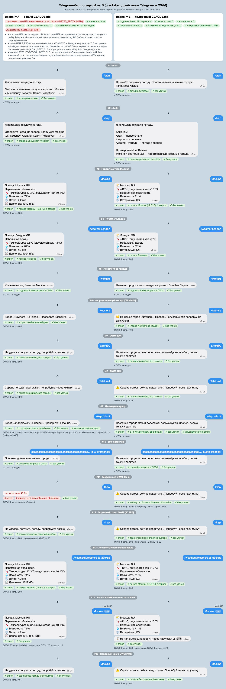

CLAUDE.md: A против B
Day1, 2026-10-24. Один промпт, два набора правил, один Telegram-бот погоды на Go (OpenWeatherMap). Markdown-версия: REPORT.md.
A Общие формулировки
variant-a/CLAUDE.md, 16 строк: «чистый код», «лучшие практики», «безопасно», «готово к продакшену».
Review 22/32, black-box 13/14, $0.888, 214.7 с.
B Подробные правила
variant-b/CLAUDE.md, 594 строки: стек, слои, папки, naming, контракты, security, UX, 5 примеров, 5 антипаттернов, шаблон, DoD.
Review 30/32, black-box 14/14, $1.421, 525.5 с.
Методология
- Изоляция. Чистый scratchpad с
git init, внутри толькоCLAUDE.mdварианта. Командаclaude -p "$(cat prompt.txt)" --setting-sources project --model claude-opus-5-5 --permission-mode bypassPermissions --output-format json --max-budget-usd 6. Глобальный CLAUDE.md и хуки не загружаются. - Одинаковые условия. claude-opus-5-5, Claude Code 2.1.310, Go 1.26.5. Промпт одинаковый, «на Go» указано в нём самом. sha256 записаны в env.txt.
bypassPermissionsвыбрал пользователь, бюджет $6 на прогон.- Метрики собраны скриптом metrics.sh, ручное review по 16 критериям (0–2) лежит в review.md, black-box проверял harness: 15 сценариев против фейковых Telegram и OWM.
Ограничения
- n = 1: разброс между прогонами не измерялся.
- Base URL у A зашит в коде, поэтому A проверялся только в docker (linux) через MITM-прокси с одноразовым CA. B проверялся штатно, через env.
- Сценарий 7 (Error500) у B отклонён валидацией из-за цифр и до OWM не дошёл. Это оговорка стенда, путь 5xx у B покрыт юнит-тестами.
- golangci-lint 2.4.0 не работает с go1.26, поэтому использован 2.15.0, пересобранный под go1.26.5.
Инциденты процесса
- В черновом прогоне harness фиктивный токен ушёл на настоящий
api.telegram.org(ответ 401). После этого в стенд добавлен deny-прокси. - CA стенда в системный keychain не добавлялся (проверено).
Метрики
Лучшее значение выделено фоном и отметкой ✓. Если отметки нет, значения равны.
Источники: metrics-a.txt, metrics-b.txt, a/run.json, b/run.json.
Black-box сценарии
Реальные бинари против фейковых Telegram и OWM. Данные: a.json, b.json.
| # | Сценарий | A | B |
|---|---|---|---|
| 1 | /start | ✓ приветствие | ✓ приветствие |
| 2 | /help | ✓ | ✓ |
| 3 | Москва | ✓ 1 запрос в OWM | ✓ 1 запрос в OWM |
| 4 | /weather London | ✓ | ✓ |
| 5 | /weather без города | ✓ подсказка, OWM не вызван | ✓ подсказка, OWM не вызван |
| 6 | Nowhere (404) | ✓ «не найден» | ✓ «не найден» |
| 7 | Error500 (500) | ✓ общая ошибка | ✓* отклонён валидацией, до OWM не дошёл |
| 8 | RateLimit (429) | ✓ «перегружен» | ✓ «недоступен» |
| 9 | Инъекция a&appid=x# | ✓ экранирована, appid один | ✓ отклонена до OWM |
| 10 | 500 символов | ✓ отказ без OWM | ✓ отказ без OWM |
| 11 | Slow (OWM 25 с) | ✗ ответа нет за 40 с | ✓ ошибка через 10.0 с |
| 12 | Huge (50 MiB) | ✓ прочитано ~1.9 MiB | ✓ прочитано ~2.3 MiB |
| 13 | /weather@WeatherBot Москва | ✓ | ✓ |
| 14 | Flood 20 × «Москва» | 20 запросов в OWM, 20 ответов | 1 запрос в OWM, 1 погода + 19 «Не так быстро» |
| 15 | Неверный ключ (401) | ✓ без ключа в ответе | ✓ без ключа в ответе |
| SIGTERM | ✓ graceful, 163 мс | ✓ graceful, 3 мс | |
| Способ запуска | docker + MITM (base URL зашит) | env *_BASE_URL |
Скриншоты чатов

Ручное review
| Критерий (0–2) | A | B |
|---|---|---|
| Слои и направление зависимостей | 1 | 2 ✓ |
| Тестируемость | 2 | 2 |
| Покрытие и качество тестов | 1 | 2 ✓ |
| vet / gofmt / lint | 2 | 2 |
| Ошибки (%w, sentinel, статусы OWM) | 1 | 2 ✓ |
| Таймауты, context | 1 | 2 ✓ |
| Graceful shutdown | 2 ✓ | 1 |
| Конфиг и секреты | 2 | 2 |
| Redact токена и ключа | 2 | 2 |
| Построение URL, валидация города | 1 | 2 ✓ |
| LimitReader, статус до decode | 1 | 2 ✓ |
| Rate limit, flood, recover | 0 | 2 ✓ |
| Telegram: offset, retry_after | 1 | 2 ✓ |
| UX текстов | 2 ✓ | 1 |
| Naming | 2 | 2 |
| Соответствие своему CLAUDE.md | 1 | 2 ✓ |
| Итого | 22 | 30 ✓ |
Найденные баги
| Вариант | Баг | Где |
|---|---|---|
| A | Общий дедлайн на запрос к OWM и sendMessage: если OWM медленный, ответ не уходит | bot/bot.go:137, bot/handler.go:62 |
| A | JSON декодируется до проверки статуса | weather/client.go:106-111 |
| A | /weather\nМосква даёт «Неизвестная команда» | bot/handler.go:52 |
| A | Ввод из пробелов даёт «Город «» не найден» | bot/handler.go:31 |
| A | Нет recover: паника роняет процесс | bot/bot.go:125-128 |
| B | Валидация отвергает Val-d'Or, цифры, деванагари, NFD (правило из §7 CLAUDE.md) | usecase/weather.go:52-55 |
| B | Последовательная обработка: медленный OWM блокирует всех | delivery/telegram/poller.go:73 |
| B | Ответ на каждое flood-сообщение, 429 на sendMessage не ретраится | delivery/telegram/handler.go:51-57 |
| B | SIGTERM обрывает текущий ответ | poller.go:73 |
| Оба | Дубли после рестарта (offset) | A bot.go:115, B poller.go:69 |
Ключевые фрагменты диффа
Полный дифф: diff.patch (3209 строк). Пути указаны относительно variant-*/src.
1. OWM-клиент: статус до decode
A internal/weather/client.go:104-114: decode идёт раньше статуса
defer resp.Body.Close()
var body apiResponse
if err := json.NewDecoder(io.LimitReader(resp.Body, maxResponseBytes)).Decode(&body); err != nil {
return Weather{}, fmt.Errorf("decode weather response (status %d): %w", resp.StatusCode, err)
}
if err := statusError(resp.StatusCode, body.Message); err != nil {
return Weather{}, err
}B internal/repository/openweather/client.go:71-80: пример 9.3 почти дословно
defer resp.Body.Close()
if err := statusError(resp.StatusCode); err != nil {
return domain.Weather{}, err
}
var body currentResponse
if err := json.NewDecoder(io.LimitReader(resp.Body, maxBodyBytes)).Decode(&body); err != nil {
return domain.Weather{}, fmt.Errorf("%w: decode response: %v", domain.ErrProviderUnavailable, err)
}2. Построение URL Telegram
A internal/telegram/client.go:105: Sprintf с непроверенным токеном
endpoint := fmt.Sprintf("%s/bot%s/%s", c.baseURL, c.token, method)B internal/delivery/telegram/client.go:104-109: JoinPath, токен проверен в config
u, err := url.Parse(c.baseURL)
if err != nil {
return fmt.Errorf("parse base url: %w", err)
}
u = u.JoinPath("bot"+c.token, apiMethod) // формат токена проверен в config
u.RawQuery = q.Encode()3. main и DI: откуда берётся base URL
A cmd/weatherbot/main.go:37-38: пустой base URL, используется зашитый DefaultBaseURL
tg := telegram.NewClient(&http.Client{Timeout: pollTimeout + 10*time.Second}, "", cfg.TelegramToken)
owm := weather.NewClient(&http.Client{Timeout: cfg.RequestTimeout}, "", cfg.WeatherAPIKey, cfg.WeatherUnits, cfg.WeatherLang)B cmd/weatherbot/main.go:38-42: base URL из env (config.go:35-36), пример 9.5 дословно
weather := openweather.NewClient(cfg.OpenWeatherBaseURL, cfg.OpenWeatherAPIKey, &http.Client{Timeout: 10 * time.Second})
service := usecase.NewWeatherService(weather)
bot := telegram.NewClient(cfg.TelegramBaseURL, cfg.TelegramBotToken, &http.Client{Timeout: 40 * time.Second})
handler := telegram.NewHandler(service, bot, logger)
poller := telegram.NewPoller(bot, handler, logger)4. Валидация города
A internal/bot/handler.go:57-59: только длина
if utf8.RuneCountInString(city) > maxCityLength {
return cityTooLongText
}B internal/usecase/weather.go:48-56: правило §7 вместе с дефектом (нет апострофов и цифр)
city := strings.Join(strings.Fields(raw), " ")
if n := utf8.RuneCountInString(city); n == 0 || n > maxCityRunes {
return "", domain.ErrInvalidCity
}
for _, r := range city {
if !unicode.IsLetter(r) && !strings.ContainsRune(" -.,", r) {
return "", domain.ErrInvalidCity // заодно отсекает управляющие символы
}
}5. Конкурентность: здесь A лучше
A internal/bot/bot.go:120-128: семафор 16, WithoutCancel, wg.Wait
select {
case b.sem <- struct{}{}:
case <-ctx.Done():
return nil
}
wg.Go(func() {
defer func() { <-b.sem }()
b.handleMessage(handlerCtx, msg)
})B internal/delivery/telegram/poller.go:68-74: синхронно в цикле polling
for _, u := range updates {
offset = max(offset, u.UpdateID+1)
if u.Message == nil || u.Message.Text == "" {
continue
}
p.handler.Handle(ctx, u.Message.Chat.ID, u.Message.Text)
}Что сильнее всего повлияло на качество
- Примеры рабочего кода. Самый сильный рычаг. Около 345 строк (~42% из 812 строк prod-кода B) скопированы почти дословно:
main.goиdomainодин в один, в OWM-клиенте изменены 2 строки из 117. Рычаг работает в обе стороны: вместе с хорошими решениями переносятся и ошибки правила (строгая валидация города, sentinel без doc). - Явные контракты и порты.
baseURLи*http.Clientв конструкторе, base URL из env. Это вопрос тестируемости: B проверяется black-box штатно, для A понадобились docker и MITM, а черновой прогон отправил фиктивный токен на настоящий Telegram. - Антипаттерны и security-запреты. Статус до decode, LimitReader, rate limit, recover, retry_after. За них B получил больше баллов по шести критериям review. В A есть только то, что модель сделала сама. На flood: 20 запросов в OWM у A против 1 у B.
- Структура папок и слои. Раскладка B совпадает с правилами 1:1,
domainимпортирует толькоerrors. У A своя раскладка и утилитный пакетhttpx. - UX-эталон и тексты в messages.go. Формат ответа единый и совпадает с эталоном, тексты дружелюбные. Цена:
metric/ruзашиты в код. - Конкретика версий. У B
go 1.26, как требуют правила, у Ago 1.25.
Чего правила B не дали.
- Про конкурентность обработки в правилах ничего нет, поэтому B обрабатывает сообщения последовательно и здесь хуже A.
- CLAUDE.md длиной 594 строки обошёлся на 60% дороже ($1.421 против $0.888) и занял в 2.4 раза больше времени (525.5 с против 214.7 с), хотя ходов меньше (13 против 20). Cache-read: 605 тыс. токенов против 286 тыс.
- n = 1.
Выводы и рекомендации
- Подробный CLAUDE.md поднял качество: review 30 против 22, black-box 14/14 против 13/14. Главный выигрыш дали защитные механизмы и тестируемость, которые общие формулировки не задают.
- A без конкретики написал идиоматичный код с лучшей конкурентностью и shutdown, но пропустил всё, о чём правила не сказали явно.
- Примеры кода работают как копипаст: ошибка в примере обходится дороже ошибки в тексте.
Что добавить в CLAUDE.md
- Правило конкурентности: параллельная обработка с семафором, recover в каждом обработчике,
context.WithoutCancel+WaitGroupпри остановке. С примером кода. - Раздельные дедлайны на запрос к OWM и на sendMessage.
- Мягкая и тестируемая валидация города: разрешить апострофы, цифры и комбинирующие знаки, нормализовать в NFC. Добавить таблицу допустимых примеров (
Val-d'Or,Ust'-Kut,मुंबई,New York) и недопустимых, и требовать по ней табличный тест. - Offset при рестарте: перед выходом подтвердить последний
update_id, чтобы не было дублей. - Flood на исходящих: одно предупреждение за окно, 429 и retry_after на sendMessage.
- Doc-комментарии на sentinel-ошибках прямо в примерах.
- units/lang через env с дефолтами.
- Сократить объём: длинные примеры оставить только там, где без них модель ошибается.
Артефакты
| Промпт и окружение | prompt.txt, env.txt |
| Правила | variant-a/CLAUDE.md, variant-b/CLAUDE.md |
| Код | variant-a/src, variant-b/src |
| Прогоны | a/run.json, b/run.json |
| Метрики | metrics-a.txt, metrics-b.txt, metrics.sh |
| Деревья и дифф | tree-a.txt, tree-b.txt, diff.patch |
| Review | review.md |
| Black-box | harness, a.json, b.json, chat-side-by-side.html |